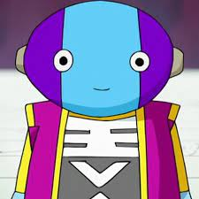
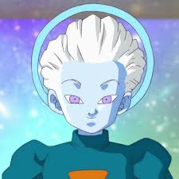
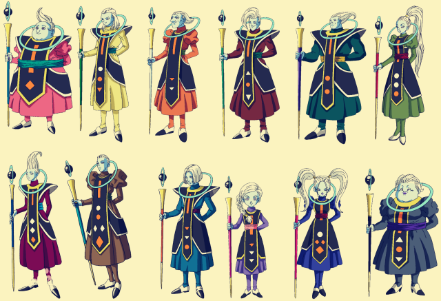
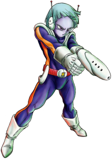
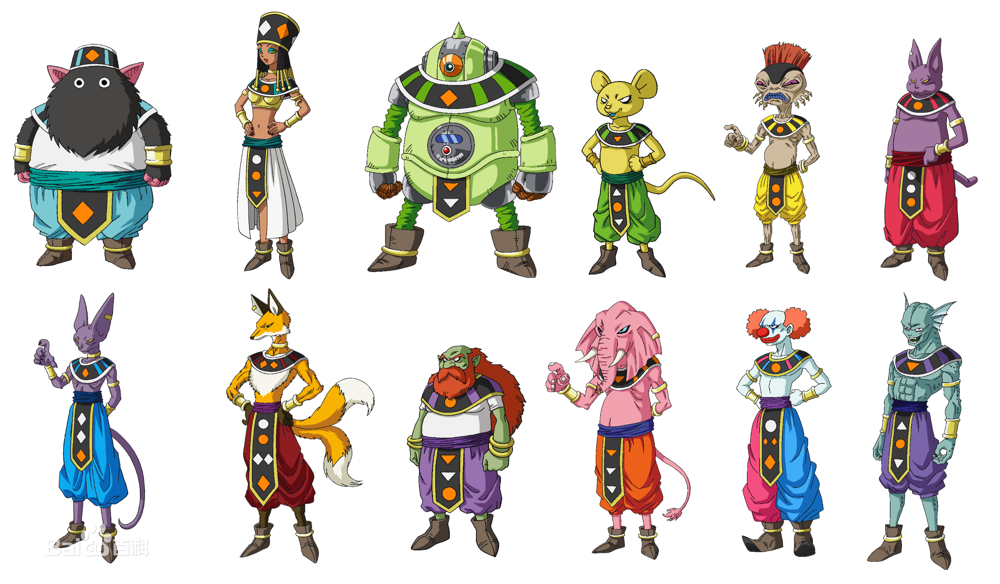
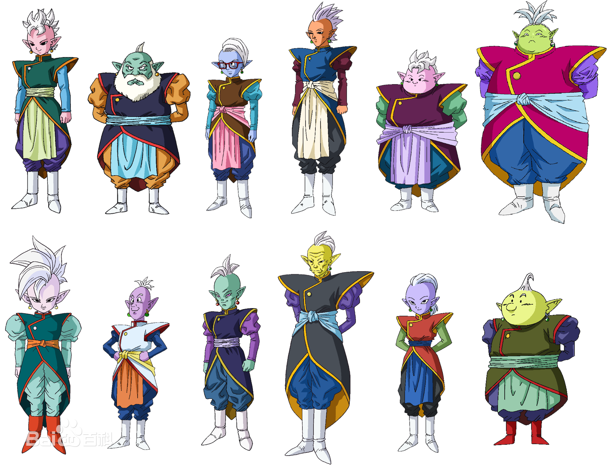

.svg)
角色名稱除了以《西遊記》為早期創作藍本之外（如孫悟空、牛魔王等角色），起初為了添加中華色彩，作者更以一些中華食物為角色命名
（如天津飯、餃子、飲茶等角色），結果後來很多角色都以食物名稱而命名。另外像紅領巾軍大部分人名都取自顏色；因為比克外型的關係
，他出身的行星那美克星（ナメック星）取名自日語中的蛞蝓 (ナメクジ)，那美克星人的名字也幾乎都與陸生軟體動物有關；賽亞人（サ
イヤ人）原本就是日文「野菜」（やさい）反過來寫，因此人名幾乎是蔬菜；弗利札軍則都是水果或冷凍食品。延續怪博士與機器娃娃的習慣，在故事中登場的部分反派角色外形是以作者討厭的人也就是歷任的編輯者為原型。
《七龍珠》連載時臺灣尚沒有將日本漫畫納進版權保護，全盛時數有數個盜版譯本，主要為七龍珠坊出版社的《七龍珠》、青文出版社的《
神龍的兒子》及後期東立於《少年快報》上的《七龍珠》連載，譯名混亂且交互使用，但主要以七龍珠坊的版本為主，臺灣自製的電影版和
《少年快報》也延用其譯名，下面以「少快」標示。直到1992年612大限後，才由東立出版社獨家代理，並在後續版本中不定時修改部份譯
名，文中以「東立」（或「東立早期」）標示。衛視中文台取得正版動畫播映權後，又有部分譯文與臺版漫畫相左，文中以「衛視中文台」
標示。
主角與夥伴
孫悟空
本作男主角，本名「卡卡羅特」（カカロット，諧音自日語中的胡蘿蔔キャロット, Carrot），貝吉塔行星的賽亞人，後來被送往地球。
參見孫悟空
貝吉塔（ベジータ）、達爾（少快、東立早期）、貝吉達（超、衛視中文台）
貝吉達行星的王子，過去曾經是弗利沙的部下，為了七龍珠跟那霸一起來到地球，結果孫悟空等人聯手擊敗。在那美克星上為了得到七龍珠而反抗弗利沙，最終被殺死後復活。
後期因為有了家庭和受到在悟空等人的影響而改邪歸正成為同伴，而在七龍珠Z魔人普烏篇故意受到魔導師巴比堤的控制進而提升了力量藉此和悟空決戰。
順帶一提，他初期用的絕招「吉力克炮」 戰鬥力 地球18000 那美克星24000 與尚波戰鬥後45000 與里庫姆戰鬥後10萬 自殘後250萬
名字來自英文蔬菜的片假名（ベジタブル, bejitaburu）前半段。
參見貝吉塔
孫悟飯
孫悟空和琪琪的長子，悟空以養父的名字來命名，自身擁有強大潛力和力量，當父親悟空不在（陰間修練）的時候，拜比克為師傅指導其武功。曾經在那美克星上參與對
弗利沙的戰鬥，後來變成超級賽亞人2消滅賽魯，是劇作中首個變身成超級賽亞人2的角色。
上高中後曾經數次以超級賽亞人身姿打擊犯罪被人們稱為「金色戰士」（金色の戦士），高中以後經常扮裝「賽亞超人」（グレートサイヤマン）的身份守護和平。食量
並沒有像父親那麼大。
參見孫悟飯
特南克斯（トランクス）
貝吉達與布瑪的兒子，分成現代版以及未來版，為了阻止人造人穿越時空回到過去，也將未來的特效藥（心臟病的藥）經由母親布瑪轉交給悟空，賽魯遊戲結束後回到原
本的世界，除了殺掉人造人，也揭穿賽魯想利用時光機回到過去的念頭，並將其殺掉讓世界恢復和平。
名字來自日語「四角內褲」（トランクス, trunks），形象取自於美國演員愛德華·福隆
參見特南克斯
比克（ピッコロ）
比克大魔王的兒子。為了報父仇以「魔少年」（マジュニア，馬朱尼亞（海南））身份參加第23回天下第一武道會，企圖打倒也有參戰的悟
空，後來受到在悟空等人的影響，而改邪歸正成為同伴。後來為了讓比克的絕招魔貫光殺砲能殺掉拉帝茲，悟空也犧牲自己；而比克利用一
年的時間，親自訓練有極大潛力的年幼悟飯，好擊倒前往地球的兩名賽亞人——貝吉達與那霸。日後也代替悟空率先對抗弗利札。
參見比克
人造人17號&人造人18號
17號
蓋洛博士從人類改造的的永久能源式人造人，本名是「ラピス」，與18號是雙胞胎姊弟，非常痛恨被蓋洛博士擅自改造，而不聽從他命令的
失敗作品。有分未來時空和現代版，未來時空的17號與18號個性極度殘忍殺害不少人類，包含貝吉達、比克、悟飯等人，後來兩人均被強化
實力後的特蘭克斯所殺。而現代版的17號據鳥山明在訪談中透露，17號在賽魯篇後去了王立自然公園的動物保護區成為一名懲治偷獵者的優
秀保護官，甚至制服了七名重生後的賽魯少年而實力大增，之後和一位女性動物學者結婚，生有一子和兩個養子。為了報答當初克林向神龍
許願將體內炸彈移除的恩情於是參加了力之大會。
動畫七龍珠GT再度登場，此時的他已經經過蓋洛博士的完全改善。而且還有兩個人，另一個17號為宇宙科學家—繆博士發明出來的(平行時空劇情）。
18號
蓋洛博士從人類改造的的永久能源式人造人，本名是「ラズリ」，和17號同樣痛恨被蓋洛博士擅自改造，同樣不聽從他命令的失敗作品。有
分未來時空和現代版，未來時空的17號與18號個性極度殘忍殺害不少人類，包含貝吉達、比克、悟飯等人，後來兩人均被強化實力後的特蘭
克斯所殺。現代版則是賽魯遊戲後目睹克林使用願望將他們體內炸彈拆除，之後嫁給克林，和克林育有一女瑪蘿。超級英雄篇已將頭髮剪短。
參見人造人17號&人造人18號
孫悟天
孫悟空和琪琪的次子，孫悟飯的弟弟。地球人和賽亞人的混血兒。悟空在和賽魯的戰鬥中死前留下的孩子。少年時代的容貌，與父親的悟空
相似，青年時期之後為了與悟空區別所以改變髮型。
參見孫悟天
克林
與孫悟空共同拜入龜仙人門下。一開始只想耍悟空，特南克斯登場時，克林說著「一開始我也討厭悟空」但是在嚴格訓練後，不知不覺就成為密友。
參見克林
反派
比克大魔王（ピッコロ大魔王）、比克大魔王（TVB後期）
原是神目賭了地球人的邪惡面影響產生了邪念，神內心邪惡成長後的分身。過去被武泰斗封印到電子鍋，後來被比拉夫解除封印，企圖支配全世界。最後被悟空打倒並且在死前產下比克。
名字來自樂器「短笛」(Piccolo)。
參見比克大魔王
弗利沙（フリーザ）、弗力札（東立）、比拉夫（少快）、飛里沙（少快）
克魯德的兒子，納美克星篇的主要敵人，兇殘狡詐，毀滅賽亞人的貝吉達行星。想通過七龍珠來長生不老，擁有三次變身能力，在故事中有出現多種形態登場。
來地球之後被特南克斯殺死，死後和其手下一起被判下地獄。在七龍珠超的宇宙生存篇的最後與悟空合作擊倒吉連第七宇宙才能存活，因此立下大功被破壞神
比魯斯賦予獎勵由嚮導天使維斯將其復活。
名字諧音自冰箱（フリーザー, Freezer）。
參見弗力札
賽魯（セル）、西魯（衛視中文台）
蓋洛博士地下秘密電腦研究所製造的人造人，是正牌的生物而不是機器人。身體細胞來自悟空、貝吉達、比克、克魯德大王、弗利沙等人。擁有再生能力，
尾巴末端呈針狀，可隨意控制針孔大小來吸收生物獲得生體能量，必須吸收人造人17號＆18號才能成為完全體，完全體賽魯能產下「賽魯.Jr」。被消滅後
被閻羅王判下地獄。
名字來自英文「細胞」的片假名（cell）。
參見賽魯
魔人普烏（魔人ブウ）
巴比提的父親比比提所製造出來的魔人。分為「善」普烏和「惡」普烏（主要敵人）。
參見魔人普烏
扎馬斯（ザマス）
第十宇宙的見習界王神，皮膚青色，雙耳戴著波特拉(橘色)，討厭人類，動畫版有時說出美麗的話，性格比較自戀。有分現代版、未來版、黑悟空版(後現代版)，但想法一致。認為人類
是「惡」應該要滅絕就是「正義」，以前擔任過第十宇宙的北界王，本人的戰鬥天才獲得賞識而目前培養成下屆界王神。除掉格瓦斯奪取時空戒指、格瓦斯的波特拉等目的是為了實施「
人類歸零計畫」來滅絕人類而建立自我理想世界。
參見扎馬斯
克維拉（クウラ）
弗利沙的哥哥，在被悟空打倒後成為「金屬克維拉」（メタルクウラ）。最早登場於《七龍珠Z 最強對最強》。
名字來自日文「冷氣機」（クーラー, Cooler）。
參見克維拉
邪念波（ジャネンバ）
為閻羅王工作的鬼（サイケ鬼）。由於疏忽看管靈魂清洗機導致爆炸使邪氣外洩而變身成邪念波。最早登場於《七龍珠Z 復活的融合!!悟空和貝吉達》。
參見邪念波
布羅利（ブロリー）
極少數的賽亞人倖存者之一。擁有遠勝貝吉達王子的潛力，被嫉妒的貝吉達王流放至黑暗的斑帕星，和父親巴拉卡斯相依為命。
41年後，弗利沙軍隊發現父子並帶到總部面見弗利沙，受弗利沙的命令來到地球，與悟空和貝吉達打出一場史無前例的戰鬥。
以《七龍珠Z 燃燒吧!!熱戰·烈戰·超激戰》裡的同名角色為參考。新版布羅利與舊版布羅利並不是同一個人，所處世界觀和設定
不同。為了區別新版布羅利與舊版布羅利，新版布羅利被命名為「布羅利：BR」（ブロリー：BR）。
參見布羅利(舊版)
波傑克（ボージャック）
曾被四名界王封印，遊走銀河的ヘラ一族的首領。最早登場於《七龍珠Z 銀河面臨危機!!身手不凡的高手》。
達列斯（ターレス）
外貌與悟空相似的賽亞人。最早登場於《七龍珠Z 地球超級大決戰》。
名字來自日文「萵苣」（レタス, lettuce）。
超級十七號（超17号）
是蓋洛博士的人造人開發技術與繆博士機器融合理論結合下來的產物。有將能量源像機關槍一樣射出去的閃光爆炸，還有把黑色能源結晶放射出來的電擊地獄球。當人造人十七號與地獄新十七號合體成為超級十七號時，他的服裝跟外觀也有很大的變化
！←手掌心是能源吸收裝置，他就是用這個吸收戰士們的氣。
貝比（ベビー）
從繆博士身體破體而出，寄生在利爾德將軍身上後被悟空三人擊敗。之後悟空他們繼續出發尋找七龍珠，在一艘破太空船上找到
了一星球和重傷的男孩，將之帶到比德魯星球（醫療惑星ピタル）治療後，發現他居然又是貝比，從此開啟與貝比的漫長戰鬥。
貝比的真面目是被賽亞人消滅的茲夫爾人所創造出來的寄生型生物，細胞裡面有茲夫爾王的基因。他的出生目的有二：讓茲夫爾
人復活，以及向賽亞人復仇。最強的絕招是復仇死亡彈，可以說是邪惡版的生命球以及超級究極砲等等。最後在乘坐太空船
逃亡時，被變身為超級賽亞人4的悟空用龜派氣功連人帶船推進太陽之中消滅。
茲夫爾人（ツフル人）是「水果」(フルツ, Fruit)的反寫。貝比就是「baby」之意。「惑星ピタル」則是英文醫院（ホスピタル, Hospital）的轉寫。
一星龍
負能量是由『弗利沙及其部下所殺害的生物復活』產生出來。他是七龍珠GT中最後的敵人，擁有凌駕於其他邪惡龍的力量。七龍珠本來是用來實現願望的，
但是他只有一個目標，那就是摧毀宇宙所有的生命，讓整個宇宙淪陷在黑暗之中。在接收六顆七龍珠後變身成為超級一星龍，變成超級一星龍的他擁有所有
邪惡龍的能力及力量。最後孫悟空集結地球中所有倖存生命的願望，以及受到掌管宇宙的界王們和宇宙中所有朋友的幫助下，成功聚集巨大的元氣彈打敗超
級一星龍。
負能量彈
神
全王

12個宇宙的最高統治者，萬物之主。有權調換破壞神或界王神，可以讓宇宙在一瞬間全部消失。原本一共有18個宇宙，其中的6個宇宙因惹怒全王已被全王消除。
擁有讓一切物質在瞬間消失的最高權限，甚至可以摧毀向超級神龍（神之龍）許願得到的絕對不死之身。
大神官

身為多元宇宙的最高統治者全王的大管家，負責照顧全王的日常生活。
大神官屬於天使一族，各個宇宙天使都是他的孩子。第七宇宙的天使維斯自稱自己的實力不如大神官的一根手指頭。
天使
天使，漫畫《龍珠超》及其衍生作品中的設定。天使是破壞神的師傅、僕人、隨從及監督者。每個宇宙各有一位破壞神，每位破壞神也各有
一名天使。
當天使負責侍奉的破壞神死了後，天使的功能停止，直到下一位破壞神的出現。

| 第一宇宙 | 第二宇宙 | 第三宇宙 | 第四宇宙 | 第五宇宙 | 第六宇宙 |
|---|---|---|---|---|---|
| 阿瓦莫 | 薩瓦 | 堪培利 | 柯尼克 | 庫卡特爾 | 芭朵斯 |
| 第七宇宙 | 第八宇宙 | 第九宇宙 | 第十宇宙 | 第十一宇宙 | 第十二宇宙 |
| 維斯 | 科倫 | 莫吉托 | 克絲 | 瑪卡麗塔 | 馬蒂努 |
見習天使
梅爾斯

表面身份是銀河巡警隊精英中的精英，真實身份是一位實習天使，為第7宇宙天使維斯的弟弟。在打破天使的中立原則消失後，大神官復活了 梅爾斯成為了凡人，梅爾斯仍擔任銀河巡警。
破壞神
每個宇宙有一個破壞神。 地位與界王神相當，僅次於負責統治所有宇宙的全王。
十二宇宙中，破壞神與界王神是共生關係，雙方分別負責宇宙中的毀滅與創造，共同維持宇宙的平衡。一旦界王神已經死去，破壞神也會死亡。
每位破壞神各有一位天使，作為自己的師傅、僕人、隨從及監督者。現任破壞神與天使的名字均改編自酒。

| 第一宇宙 | 第二宇宙 | 第三宇宙 | 第四宇宙 | 第五宇宙 | 第六宇宙 |
|---|---|---|---|---|---|
| 伊旺 | 海勒斯 | 莫斯可 | 奎特拉 | 亞拉克 | 象帕 |
| 第七宇宙 | 第八宇宙 | 第九宇宙 | 第十宇宙 | 第十一宇宙 | 第十二宇宙 |
| 比魯斯 | 利吉爾 | 西打拉 | 朗姆西 | 味美得 | 金 |
界王神
居住在界王神界，地位與破壞神相等，僅次於全王和大神官。只有界王神可以瞬間到達全王的宮殿，破壞神只能靠天使高速飛行到全王的宮 殿。
同一宇宙內，破壞神與界王神是組合存在，共同維持宇宙毀滅與創造的平衡。一旦其中一方死亡，另一方也會死。因此決不允許破壞神無故殺死任何宇宙的界王神。

| 第一宇宙 | 第二宇宙 | 第三宇宙 | 第四宇宙 | 第五宇宙 | 第六宇宙 |
|---|---|---|---|---|---|
| 阿納特 | 佩爾 | 艾爾 | 庫爾 | 奧古瑪 | 福瓦 |
| 第七宇宙 | 第八宇宙 | 第九宇宙 | 第十宇宙 | 第十一宇宙 | 第十二宇宙 |
| 辛 | 伊魯 | 洛而 | 格瓦斯 | 凱伊 | 阿古 |
賽亞人
稱號為「戰鬥民族」。命名來源是將蔬菜 (野菜、やさい)進行移位構詞，直接寫成漢字為「賽亞人」。
特色
- 戰鬥力數值比基準值高，就被視為上級戰士，直接作為戰鬥員候補進行養育。
- 戰鬥力數值低的人，就會被評為下級戰士，可能成為技術員，也可能放進宇宙船發送到某個邊境的星球去。（這個設定在2014年4月鳥 山明連載的《DRAGONBALL 特別附贈篇》「七龍珠負：命中注定被遺棄的小孩」改成「賽亞人嬰兒出生後過一段時間，戰鬥力值若仍然 低於平均值，才會放進宇宙船發送到某個邊境星球。」）
型態變化
巨猿超級賽亞人
超級賽亞人在原作漫畫裡，第一次登場是在弗利沙篇。因為克林被弗利沙所殺讓孫悟空感到非常憤怒，最後變身成為傳說中的超級賽亞人， 頭髮會變成金黃色。早期的原作設定是必須要有一顆沉穩的心，以生氣作為導火線－「憤怒與生氣」，就能夠變身成為超級賽亞人。在2017 年12月，鳥山明提出：要成為超級賽亞人的條件是體內必須有S細胞。這種S細胞積累到一定數量時，以憤怒為契機讓S細胞爆發般增長，身 體發生變化成為超級賽亞人。另外還有其他的超級賽亞人狀態，是根據這個超級賽亞人衍生而來，主要皆是人物透過修行和戰鬥的過程中領 悟到的新狀態。外觀的差異是造型和髮型有不一樣變化，以及字面上的設定有更強大的力量加成。
傳說中的超級賽亞人
東映動畫公司原創的傳說中的超級賽亞人是布羅利，他不需要經過修練就能隨著時間成長而獲得無與倫比的戰鬥力。和主角孫悟空同一天出 生，但是布羅利非常厭惡孫悟空，所以時常找他麻煩。
超級賽亞人2
按照孫悟空的説法就是“超越了超級賽亞人的超級賽亞人”。首次出現於《龍珠Z》第184集“16號的悲慘下場，悟飯的憤怒”。《龍珠改》第92 集“消失在空中的眼淚!悟飯憤怒的覺醒”。曾經變身此形態的變身者：孫悟飯、孫悟空、貝吉塔、未來特蘭克斯、卡莉芙拉、加貝、凱芙拉。
超級賽亞人3
按孫悟空的話説，超3就是“超越了超越超級賽亞人極限的超級賽亞人”。首次出現於《龍珠Z》第245集：悟空驚人的變身 超級賽亞人3!《龍 珠改魔人布歐篇》第28集：阻止魔人布歐 限界！超級賽亞人3！
變身此形態者：孫悟空、悟天克斯
超級賽亞人4
《七龍珠GT》的原創人物。紅色的勇士，超級賽亞人的最強型態，力量比超級賽亞人三強上很多，會用能量彈連擊以及十倍的龜派氣功波。 戰鬥民族賽亞人之中，每1000年內才會出現一個『超級賽亞人』，而他的究極型態是超級賽亞人四。必須要擁有賽亞人的尾巴，以及具備成 為超級賽亞人的能力，在變身成為金黃色巨猿後回復理智，才能變身成為身上長滿紅色體毛的超級賽亞人四。]超級賽亞人4並不是超級賽亞 人的進化，而是賽亞人原始的力量。因為製作人為了方便，所以取名為『超級賽亞人4』，他是超級賽亞人的另外一種狀態。
超級賽亞人之神
《七龍珠Z 神與神》首次登場，《七龍珠超》有登場，是由在遠古時期的沙達拉行星上好的賽亞人為了對抗壞的賽亞人而所短時間創造的救 世主，需由五位善良的賽亞人向另一位善良的賽亞人注入力量方得變身。戰鬥力已經超越所有賽亞人次元達到神一般的境界，故稱為「超級 賽亞人之神」。
超級賽亞人之神的變身時間很短。在劇場版中，悟空與破壞神對戰途中就變回原來模樣，但悟空卻可吸收其能量將自己的次元再次提升，所 以變回原形時力量並沒有減弱多少。在《七龍珠超》中悟空曾自力變身成此形態，而漫畫版的「未來特南克斯篇」貝吉達也有使用此型態來 對付扎馬斯。另外，劇場版《七龍珠超 布羅利》中貝吉達和悟空也以曾變身此形態對戰布羅利。
超級賽亞人藍
在劇場版《七龍珠Z 復活的F》首次登場，爾後在動畫版《七龍珠超》登場，是擁有「超級賽亞人之神力量的超級賽亞人」。以超級賽亞人 之神狀態為基礎作出突破而變身成的超級賽亞人型態，力量比超級賽亞人之神更強大，又名SSGSS（英文簡稱），是擁有神之氣息的超級賽 亞人。與黃金弗利沙對戰時初次變身，這是悟空和貝吉達在維斯那裡訓練後達到的境界。
超級賽亞人玫瑰
由第十宇宙的界王神扎馬斯佔據悟空的身體直接突破超級賽亞人之神的變身。
完全超級賽亞人藍
《七龍珠超》漫畫版第24話中悟空以嘗試控制超級賽亞人藍的力量而到達超級賽亞人藍的完全形態，把超藍的氣封鎖在體內以此提升力量， 但這型態無法使用太久，會依每個人的身體狀態而定，特徵與原本的超級賽亞人藍一樣除了沒有藍色火焰之外，能完美的控制其力量並能夠 與合體扎馬斯打成平手。
超級賽亞人之神力量的超級賽亞人・進化
首次出現於七龍珠超漫畫40話＆動畫第123集。貝吉達因不甘心孫悟空又突破自己的極限而憤怒變身成此型態，動畫版則是為了兌現和徒弟加 貝的承諾，逼出自己極限的力量突破超藍界限，與悟空共同對戰吉連前爆發變身。外表和超藍相若，但瞳孔和髮色變成更閃亮的藍色。在 《七龍珠Z：爆裂對戰》遊戲中這形態叫做「完全超級賽亞人藍」，然而在《超七龍珠英雄》遊戲中這形態叫做「超級賽亞人之神力量的超 級賽亞人・進化」。
超級賽亞人憤怒
《七龍珠超》第61集中由未來特南克斯過於憤怒而突破超級賽亞人2的變身而變身而成。頭髮與超級賽亞人2的髮型一樣，但是周圍的氣是黃 色與藍色的氣焰。擁有能與超級賽亞人玫瑰黑悟空對比的力量，就連黑悟空與未來扎馬斯聯合起來的氣功波攻擊都能反彈回來的強大力量。 在《七龍珠Z：爆裂對戰》遊戲中這形態叫做「超級賽亞人」，然而在《超七龍珠英雄》遊戲中這形態叫做「超級賽亞人憤怒」。
超級賽亞人布羅利（全力爆發／FULL POWER）
2018年12月14日在日本首映的動畫電影『七龍珠超 布羅利』中，布羅利和超級賽亞人之神藍色的悟吉達戰鬥時變身的狀態，上半身赤裸的外 觀和『七龍珠Z』「布羅利」相關電影「一千年才會出現一名『傳說中的超級賽亞人』」十分相似，但是設定卻不一樣。官方將其命名為 「超級賽亞人布羅利FULL POWER（超サイヤ人ブロリーフルパワー）。
其他賽亞人
巴達克（バーダック）在動畫中先登場，人物設計是鳥山明老師，後來也出現在漫畫《銀河巡警JACO》中。
貝吉達行星的賽亞人，悟空和拉帝茲的父親，動畫原創中原本的小隊被弗利沙等人滅團並得知弗利沙打算滅掉賽亞人後一個人挑戰弗利沙， 最後死於貝吉達行星的爆炸之中。但在七龍珠的《巴達克外傳》中，貝吉達行星爆炸後他沒有死去，反而因爆炸進入時空隧道回到仍未被賽 亞人佔領而改名前的普蘭特行星（惑星プラント），並在那兒變身成超級賽亞人，擊敗想要佔領普蘭特行星的弗利沙祖先宇宙海賊齊爾德 （チルド），超級賽亞人傳說從此在弗利沙一族流傳。
《銀河巡警JACO》和《七龍珠超》大幅修改巴達克的人設和個性，如巴達克與姬聶是少數戀愛結婚的賽亞人，個性受姬聶影響而比較天真。
40年前賽亞人曾經與弗利沙軍進攻西利亞爾星，但隨即發現倖存的葛拉諾拉和妙姿利母子一時心軟救下他們，但是行蹤被西塔的人發現，巴 達克為了掩護葛拉諾拉他們與西塔一族的人決鬥，最後逆轉勝了對方後離開西利亞爾星。幾年後洞察到弗利沙的陰謀後與姬聶將三歲的孫悟 空送往地球，沒多久就抵抗弗利沙，隨後死於貝吉塔行星的爆炸。
名字意為「牛蒡」（Burdock）。普蘭特意即「植物」（plant）。齊爾德意即「冷藏」（chilled）。
凱莉芙拉&凱爾
凱莉芙拉（カリフラ）
第六宇宙的女賽亞人兼選手，非常有名的黑道角頭但心地不壞，收養不少包含像愷兒等無家可歸的賽亞人，就連軍人也不怕。，動畫版為連 索的妹妹。卡貝前往招募的「力之大會」參賽戰士，擁有天才般的戰鬥感。
第一個可以變身超級賽亞人的女性賽亞人，動畫版可以變身成為超級賽亞人2。
凱爾（ケール）
第六宇宙的女賽亞人兼選手，凱莉芙拉收養的小妹，性格內向，實力比凱莉芙拉強但一向尊敬她而不敢表態，能變身成為超級賽亞人但覺醒 無法控制自己的理智而暴走，加貝認為愷兒可能是千年一見的傳說級惡魔賽亞人。超級賽亞人暴走形態的模樣和招式類似傳說的超級賽亞人 形態的布羅利。
波特拉
是界王神歷代流傳下來的專屬寶物，其功能是兩個人用來合體為一個非常強大的戰士。除界王神以外的人使用波特拉耳環合體最多隻能維持
一個小時（既融合術的兩倍，鳥山明設定）；界王神的合體時間則是永久，（合體者只需一個是界王神即可）而且如果界王神與非界王神合
體則只會變成界王神一個人的聲音;耳環合體和融合原理相同,但耳環比融合更強大。
使用雙方將耳環分別戴在不同的耳朵上，就會自動靠近，完成合體。
人物
貝吉特貝吉特是由孫悟空（卡卡羅特）與貝吉塔使用界王神聖物“波特拉耳環”合體所誕生的超級戰士，是《龍珠》原著最強的戰士。常態下能夠將 吸收孫悟飯後的布歐玩弄於股掌之中。
性格沒有像融合出來的戰士一樣自大，相反比較冷靜。可以説是孫悟空和貝吉塔的性格互補，有着貝吉塔冷靜分析的頭腦和孫悟空熱愛同伴 的心態，互相彌補了互相的缺點。因為有着強大實力和優秀的頭腦性格，堪稱龍珠史上最完美的合體戰士。
非界王神使用的話，合體只能維持一小時
凱芙拉
是由凱莉芙拉與凱爾使用第六宇宙波特拉耳環合體所誕生的超級戰士，同時也是龍珠史上第一位女性賽亞人合體的戰士。
由於凱爾的特殊性所以與其他合體人不同凱芙拉氣理論上可以自動提升沒有極限。
合體扎馬斯
《龍珠超》登場，是由黑暗人與未來扎馬斯使用第十宇宙波特拉耳環合體所誕生的戰士。擁有強悍的實力和不死身。發出的“光之壁”觸碰到 的東西都會被絲毫不留的消失，實力已經膨脹得逼近普通超藍的貝吉特，但仍被擁有最強戰士稱號的貝吉特壓倒扎馬斯【合體】，第十宇宙 界王神·格瓦斯曾説最強的黑暗人與擁有不死身的扎馬斯二者一旦結合起來，實力並非相融，而是無限膨脹，號稱最強之神。
波特拉-貝吉特
波特拉-札馬斯
融合術
融合，是指日本動畫片《七龍珠》中的融合術，是美達摩星人的秘傳法術，通過兩個人跳一種奇怪的左右對稱的舞蹈，然後兩人伸出雙手各
一個手指對上，就可以合體成為一個新人。
孫悟空在陰間時遇到美達摩星人後傳授的，後在普屋篇教會特蘭克斯及孫悟天。
融合的理論時間是三十分鐘，在龍珠GT中會受能量大小的影響（悟吉塔超四融合只有十分鐘）。融合後的人均身穿美達摩星人的民族服裝。
如果融合步法跳錯了或者手指沒對好，就會錯誤合成胖子與瘦子，且力量還會更加下降。融合後力量遠大於單體兩個人相加，具體增幅未知。
人物
悟天克斯悟天與特南克斯透過施展梅達摩爾（メタモル）星人的合體技「融合」（フュージョン）的合體戰士。
悟吉塔
孫悟空與貝吉達透過合體技「融合」出現的角色。
以《七龍珠Z 復活的融合!!悟空和貝吉塔》裡的同名角色為參考。為了區別新版悟達爾與舊版悟吉塔，新版悟達爾被命名為「悟達爾：BR」（ゴジータ：BR）。